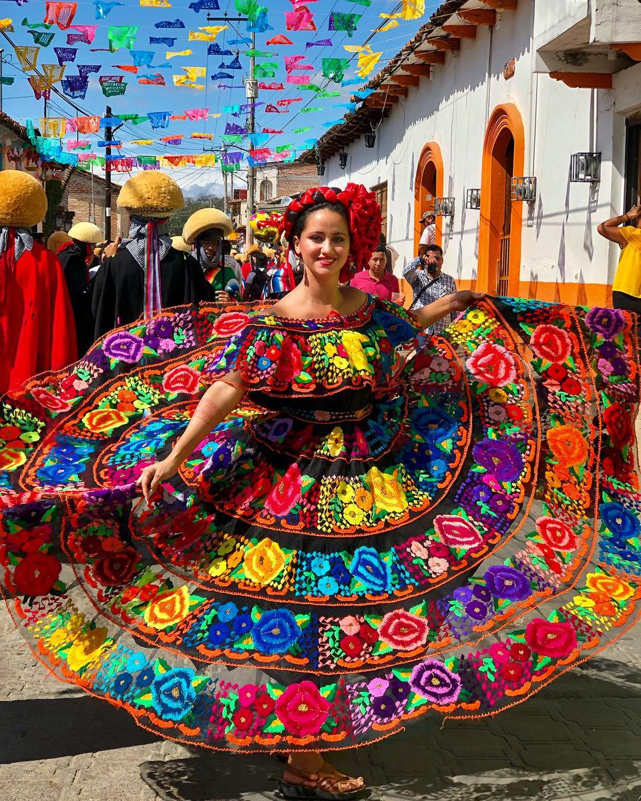
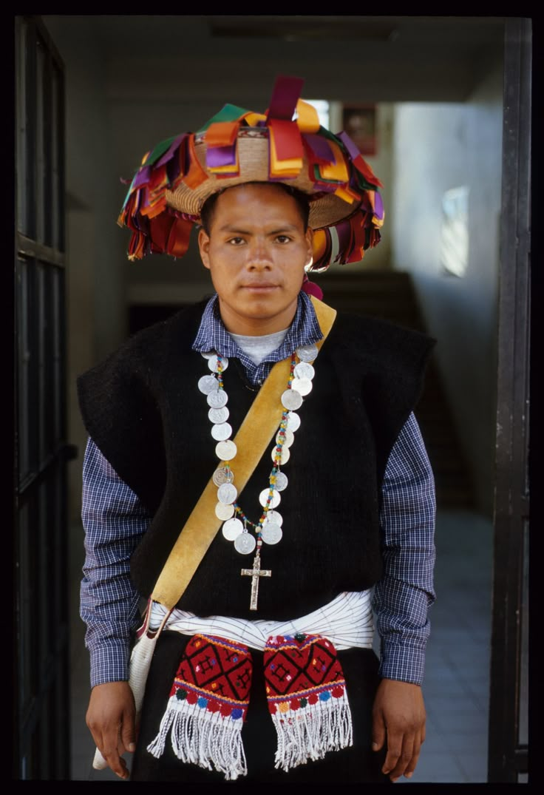

Cultura
Lengua:
En la Región VIII Norte de Chiapas, las lenguas principales que se hablan son el Tzeltal, el Tzotzil y el Zoque. Específicamente, el Zoque se habla en la región noroccidental, y las lenguas Tzeltal y Tzotzil, de la familia maya, tienen comunidades importantes en la zona
Detalle de las lenguas:
Zoque: Conocido también como "Ode", "Ore" u "Ote", es una lengua zoqueana que se habla en la parte noroccidental del estado. La etnia Zoque es una de las más antiguas de Chiapas y sus hablantes se concentran en municipios de la parte norte de la entidad.
Tzeltal: Esta lengua maya tiene variantes lingüísticas en Chiapas, incluyendo el Tzeltal del norte. Se habla en varios municipios del estado, y el Sistema de Información Cultural de México lista algunos como Sitalá, Sabanilla y Tumbalá como lugares donde reside su población.
Tzotzil: Otra lengua maya hablada en Chiapas, el Tzotzil del norte también tiene presencia en la región. Municipios como Chamula, Zinacantán y San Andrés Larráinzar son conocidos por su población Tzotzil.
Otras lenguas: Además de las principales lenguas mencionadas, en la región también se hablan otras lenguas indígenas en menor medida, como el Chol, que lo podemos encontrar en la zonad de Ocosingo y el Tojolabal, que forman parte de la diversidad lingüística de Chiapas.
Etnias:
Esta región se caracteriza por una rica diversidad étnica. Si bien en el estado existen doce pueblos indígenas reconocidos, la población de esta región está predominantemente conformada por los pueblos Ch'ol y Zoque. A continuación, se presenta un perfil de cada uno de estos grupos y de otras etnias con presencia en la zona.
Ch'ol:
El pueblo Ch'ol es uno de los grupos mayenses más representativos de la Región Norte. Su idioma, el ch'ol, pertenece a la familia lingüística maya. Históricamente, se consideran descendientes de los antiguos habitantes de ciudades mayas como Palenque y Yaxchilán. Su economía se basa principalmente en la agricultura de temporal, con cultivos como el maíz, el frijol, el café y la caña de azúcar. En su cosmovisión, existe una profunda conexión con la naturaleza y el ciclo agrícola, realizando ceremonias y rituales para pedir lluvia y buenas cosechas. Municipios como Tila, Tumbalá y Salto de Agua son centros importantes de la cultura ch'ol.
Zoque:
El pueblo Zoque tiene una presencia histórica y fundamental en el norte de Chiapas. A diferencia de sus vecinos ch'oles, su lengua pertenece a la familia mixe-zoque, que se cree pudo haber sido la lengua de la cultura olmeca. Habitan principalmente en municipios como Ocotepec, Tapalapa y Chapultenango. Sus actividades económicas incluyen la agricultura, la alfarería y la producción de artesanías de palma. Su cultura es rica en tradiciones, siendo especialmente conocidas las festividades de la "Candelaria" y los "Zoquitos", donde se realizan danzas y música tradicional que reflejan la fusión de creencias prehispánicas y católicas.
Tzeltal y Tzotzil:
Aunque en menor medida comparativa, también existe presencia del pueblo Tzeltal (o Tseltal) en algunos municipios de la región norte. Como uno de los grupos mayenses más grandes de Chiapas, su expansión ha llegado a zonas colindantes con esta región. Se dedican principalmente a la agricultura y al comercio, y mantienen una fuerte organización comunal y sistemas de cargo tradicionales que rigen la vida social y religiosa en sus comunidades.
Mam y Kakchiquel:
Es posible encontrar comunidades de otros grupos, como el Mam y el Kakchiquel, cuya presencia en la región norte es más reducida y a menudo está vinculada a movimientos migratorios recientes desde otras regiones de Chiapas o desde Guatemala. Estos grupos contribuyen a la diversidad cultural de la región, manteniendo sus propias lenguas y tradiciones en sus nuevos asentamientos.
Trajes Típicos
La Región Norte de Chiapas tiene como referente el traje de chiapaneca, caracterizado por su blusa y falda de satín negro o blanco adornadas con un vuelo de tul y bordados de flores multicolores que simbolizan la naturaleza exuberante de la selva. Sin embargo, en la región se encuentran otros trajes distintivos como el huipil de Tenejapa, una comunidad tzeltal, que es una blusa de algodón con bordados llenos de simbolismo y colores, y que se complementa con una falda oscura ajustada con faja y un rebozo.

El traje de Chiapaneca:
Composición:
Consiste en una blusa de satín negro o blanco con un escote semicircular.
Decoración:
Sobre la blusa se coloca un vuelo de tul con flores bordadas en hilo de seda de colores vivos.
Falda:
Es una falda amplia de satín negro o blanco, que también es adornada con bordados florales.
Simbolismo:
Los bordados de flores representan la flora de la selva chiapaneca y dan contraste al fondo oscuro o blanco del traje

El traje de Tenejapa (Tzeltal):
Huipil:
Es una blusa de algodón de colores vivos, a menudo blanco, con elaborados bordados en tonos rojos, azules, verdes y amarillos.
Falda:
Es una falda enredada (enredo) de tela larga y oscura, frecuentemente negra o azul
Faja:
Una faja colorida llamada chumite, que se envuelve en la cintura y suele tener diseños geométricos.
Rebozo:
Un chal o rebozo se usa para cubrir los hombros.
Accesorios:
Se complementa con collares de cuentas de colores y adornos en el cabello con cintas.
Simbolismo:
Los diseños geométricos y florales en el traje representan la cosmovisión tzeltal y su conexión con la tierra y la naturaleza